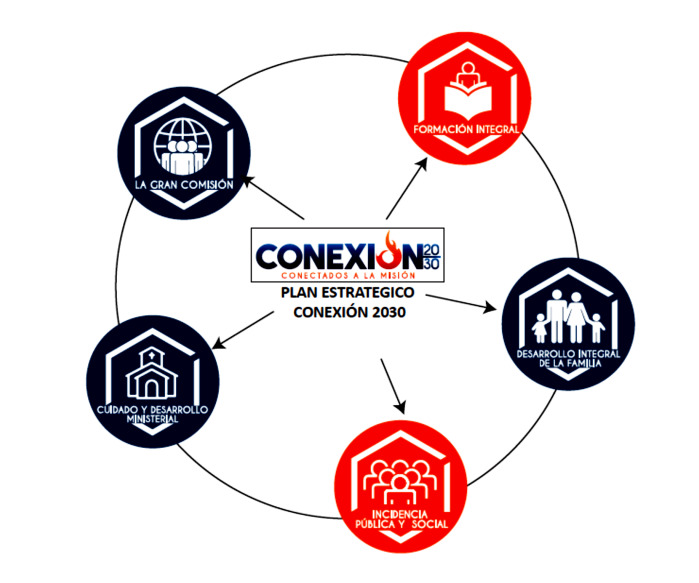

PLAN ESTRATÉGICO REGIONAL
1. ÁREA LA GRAN COMISIÓN
ESTRATEGIAS
- Los distritos deben Plantar o participar en la plantación de una nueva iglesia cada año
- Coordinar con los pastores para participar y promover la evangelización en su iglesia local, junto con sus redes ministeriales
- Consolidar en cada iglesia local el ministerio de evangelismo y misiones para fortalecer el trabajo distrital
- Equipar los lideres mediante talleres de adiestramiento evangelístico y plantación de iglesias.
- Campañas evangelistas misioneras con la finalidad de abrir nuevas misiones o fortalecer las que ya existen, coorganizado por los distritos
- Los pastores promueven y facilitan la plantación de grupos de crecimiento que las Redes Ministeriales quieran realizar en la iglesia local
2. ÁREA FORMACIÓN INTEGRAL (SEMINARIO)
EDUCACIÓN FORMAL
- Promover la participación de nuevos alumnos en las distintas modalidades del seminario de la región – Extensión del Seminario Bíblico Gamaliel.
- Al recomendar y apoyar un líder de la iglesia local al SBG, asegurarse que tenga vocación de servicio, de mente enseñable, y gran identidad por la IDDP.
- Involucrar intencionalmente a los estudiantes y egresados del SBG en responsabilidades de liderazgo y servicio en la iglesia local.
EDUCACIÓN BÍBLICA
- Promover la educación bíblica y teológica en modalidades presencial y virtual (sincrónica y asincrónica).
- El pastor promueve y participa enviando a líderes de la iglesia a prepararse en los programas de formación de maestros de la Academia Bíblica o Escuela Dominical.
- Programa y desarrolla sostenidamente el proceso de la Academia Bíblica en tu iglesia local.
CAPACITACION EN COMPETENCIAS
- Programar cursos de actualización pastoral a nivel regional.
- Monitorear el uso de libros de discipulado de manera integral en las iglesias, mediante reportes de pastores y obispos distritales, con la finalidad de lograr discipular al 100% y se reporte su desempeño de membresía local.
ESPIRITUALIDAD PENTECOSTAL
- Participación en programas bien planificados y estructurados de ayuno, oración, lectura de la palabra y discipulado
- Programar ayuno y/o vigilias a nivel regional centralizados o descentralizados con la coordinación de los líderes de la red de intercesión.
- Establecer un programa de enseñanza en las iglesias locales sobre la espiritualidad pentecostal.
TECNOLOGIA Y COMUNICACIÓN
- Promover el uso y desarrollo de tecnología; para la liturgia, el desarrollo de la iglesia local y la enseñanza de la palabra.
- Promover la participación de líderes de las iglesias en los programas de Desarrollo Tecnológico.
- Organizar un directorio de ubicación de nuestras iglesias y misiones en toda la región para darse a conocer mediante las redes sociales (Facebook)
- Promocionar las actividades principales de cada iglesia a nivel Distrital resaltando los enfoques (evangelismo y misiones, educación bíblica y teológica, Social, infraestructura y/o construcción, música, etc.)
3. AREA DESARROLLO INTEGRAL DE LA FAMILIA
- Coordinar los ministerios de Mujeres, GE, Varones e Infantil para la semana de la familia.
- Promover la participación de los líderes de las iglesias en programas de capacitación para el desarrollo integral de la familia.
- Organizar programas de formación y consejería para la familia integral, en coordinación y apoyo de las Redes Ministeriales pertinentes.
INFANTIL
- Velar por el funcionamiento de la escuela bíblica en las iglesias y realizar un control de registros de asistencia
- Motivar a las maestras(os) en mejorar su perfil educativo, participando en cursos de liderazgo como parte de la superación ministerial.
- Monitorear las actividades de evangelismo infantil organizado por los distritos o iglesias locales.
- Motivar a las maestras además de enseñar a cumplir un rol de discipulado acompañando a los niños en su formación como líderes y evangelísticos.
- Fortalecer el perfil de los niños para que tengan participación en los programas de la iglesia local, asi se van formando como líderes y comprendan cuál es su rol dentro de la iglesia.
- Fortalecer el perfil de los padres, preparándose para educar mejor a sus hijos, participando de seminarios y encuentros con otras familias, a nivel local o distrital.
GE-TEENS
- Consolidar un registro de adolescentes por iglesia y promover la participación en programas de crecimiento y bienestar integral
- Desarrollar talleres y seminarios para jóvenes y adolescentes en cada distrito con temas bíblicos y de emprendimiento.
- Promover la lectura de la biblia con un método supervisado por cada líder local y distrital
- Promover el fortalecimiento de talentos y dones juveniles a nivel local/distrital/regional
MUJERES – CONECTADAS
- Lograr formar mujeres de oración y estudiosas de la biblia (retiros espirituales)
- Lograr que cada mujer sea parte de un grupo permanente de oración (GPO) en su iglesia local y participante en la evangelización de su iglesia local.
- Capacitar enfocando temas como por ejemplo: “Ser una esposa amorosa y compañera de su marido“, “Como educar a los hijos a servir a Dios y a la comunidad”, “Hijos que cuiden responsablemente de sus padres”, etc
- Promover la participación en cursos de liderazgo del Ministerio de la mujer.
- Desarrollar compasión y apoyo a familiar vulnerables.
- Actividades o programas educativos en cada distrito o iglesia enfocado contra el abuso y la violencia familiar
VARONES
- Fortalecer la vida devocional y oración, en los varones como líderes de su familia
- Promover la participación en capacitaciones con temas de liderazgo y de salud física
- Consolidar un registro de varones por iglesia y promover la participación en programas de crecimiento y bienestar integral
- Formar varones que sirvan en sus iglesias según el don que tienen, dando apoyo al trabajo pastoral.
4. AREA INCIDENCIA PÚBLICA Y SOCIAL
- Reconocer los problemas sociales que están presentes en la sociedad (Drogadicción, pobreza, delincuencia, violencia, marginalidad, etc.)
- Promover la participación en programas de incidencia social de la IDDP. Así como Cristo era movido a misericordia, la iglesia debe ser movida por compasión al más necesitado. (Un día un millón, Apoyo de mujeres viudas, etc)
- Identificar, formar, y promover en las iglesias el liderazgo los miembros que tienen influencia en los distintos ámbitos de la sociedad.
5. AREA CUIDADO Y DESARROLLO MINISTERIAL
EJEES: ATENCIÓN AL MATRIMONIO Y FAMILIA PASTORAL, PREVISIÓN MINISTERIAL, TRANSICIÓN MINISTERIAL SALUDABLE, SUPERACIÓN PERSONAL Y FAMILIAR, CREDENCIALIZACIÓN
- Promover que cada iglesia establezca un plan de cuidado a la familia pastoral que incluya: Un día de descanso semanal, Vacaciones de un mes anualmente, Privacidad familiar (casa pastoral).
- Incentivar la participación de todas las iglesias para el fondo “Salud y asistencia Pastoral”
- Incentivar que la Iglesia Local facilite las condiciones necesarias para que el Pastor estudie y se actualice para el ministerio.
- La iglesia local apoyará a sus pastores para que crezcan y desarrollen su ministerio y obtengan los rangos ministeriales dentro de la Iglesia de Dios.
- Promover la participación de los pastores o líderes en la preparación anticipada según el rango ministerial al que postula.
